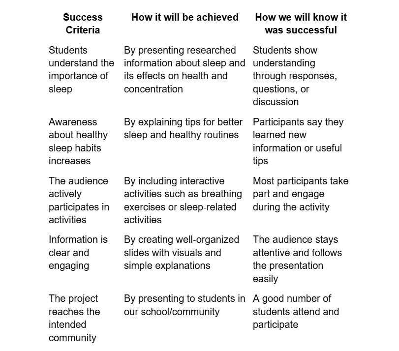
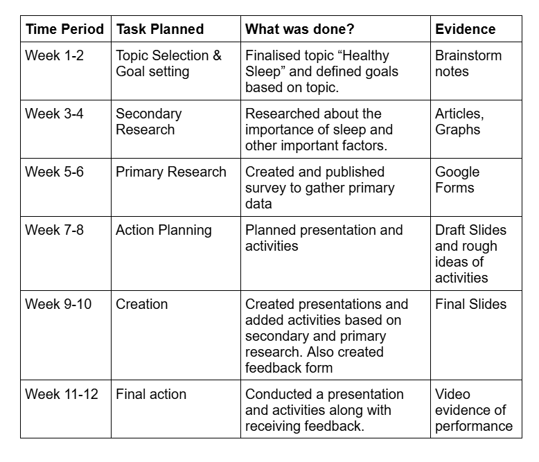
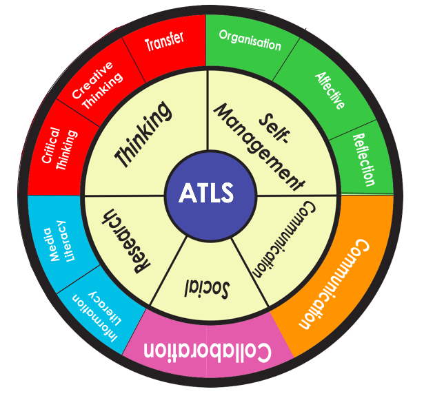

Organising our ideas and preparing our project

This success criteria helped our team guide our planning and ensured that our project effectively raised awareness about healthy sleep and its importance.


Throughout this activity, multiple ATL Skills were developed. Some of the ATL Skills that we developed throughout this community project are-
Research Skills: Throughout this activity, we developed our research skills by using both primary and secondary sources.
Communication Skills: We developed communication skills by presenting data and information in the form of a presentation and speaking in front of an audience.
Self-Management Skills: We developed self-management skills by organizing tasks, managing time and organizing data. We organized tasks based on priority, managed our time so that this activity could be completed in 3 months and we also organized data into neat slides.